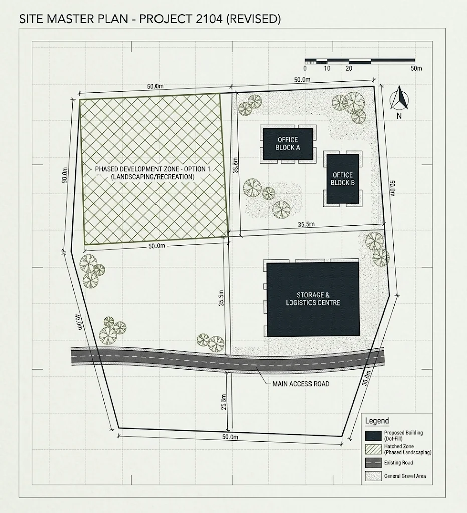

Development plans
Drafting and reviewing statutory spatial policy, from the evidence base through to the objectives that guide how land is used.
I'm a spatial planner working in Irish local government and professional practice, with a focus on how planning systems adopt new tools responsibly.

My work sits where statutory policy meets the places people actually live in. I spend my days on development plans, the evidence behind them, and the long process of turning a strategy into something a community can recognise on the ground.
Alongside that, I care about how the planning profession handles change, particularly the responsible use of data and new technology in decisions that shape the public realm. Good planning is patient, transparent, and accountable, and I try to bring that same posture to the tools we adopt.
Drafting and reviewing statutory spatial policy, from the evidence base through to the objectives that guide how land is used.
How planning authorities can use data and emerging technology transparently, and within the rules that protect the people affected.
Supporting standards and continuing education across the planning profession, so practice keeps pace with the questions it faces.
Open to conversations about planning practice, spatial policy, and the sensible use of technology in the public sector. The quickest way to reach me is by email.